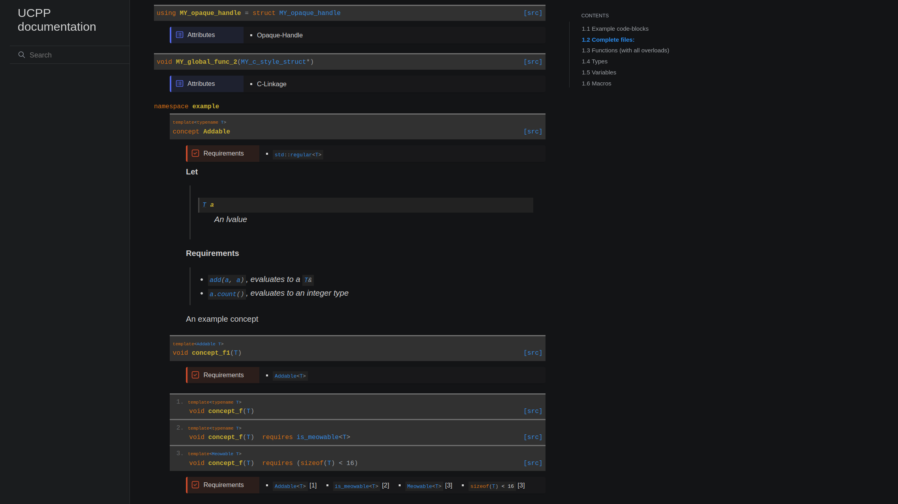
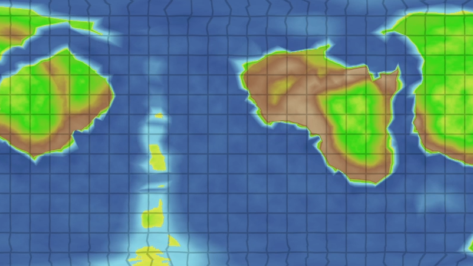
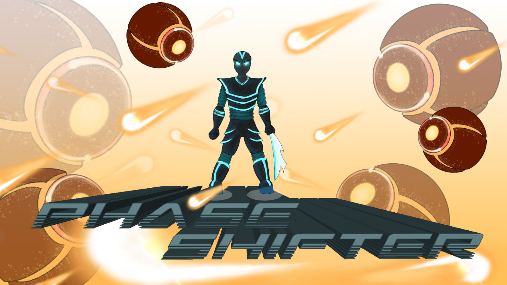

Portfolio
UCPP DocGen (2021 - Now)

Example,
GitLab
1 programmer
C++20, Python, Sphinx, libClang
A simple quick-and-dirty preprocessor that uses libClang to parse a C++ codebase to enrich RST files with API documentations and markup, which can be consumed by Sphinx to generate an HTML site.
Features:
- C++20 support on par with the current Clang release (including concepts)
- Compact rendering of overload sets
- Reference links for documented entities in
.. code-block::directives - Extraction of marked function bodies as example code
- Deduction of
autoreturn types - Extraction of
requiresclauses - Human-readable formating of concept definitions
- Generation of web links to STL types and other external libraries
- Automatic detection of many higher level attributes for types (POD, Standard-Layout, Regular, Hashable ...)
- Supports both reStructuredText and a subset of Doxygen commands in comments (as well as an unhealthy mix of both)
- Custom CSS for the Furo Sphinx-Theme
- Unifies the color scheme of example code blocks and documentation entries
- Custom styling for attributes and requirements
- More compact rendering of templates and admonitions
Yggdrasill (2020 - Now)

Blog
WebGL,
Windows,
Linux,
GitLab
1 programmer
C++20, OpenGL ES, ImGui
Yggdrasill is a work-in-progress world generation toolkit, that currently consists of 4 main parts:
- A low-level C-API, designed for easy portability and as a basis for high-level APIs written in other languages
- A high-level C++-API
- A number of modules that solve different aspects of the world-generation process
- An interactive editor that utilizes these modules to generate worlds in real-time
PhaseShifter (2019)

Download,
GitLab
6 days
4 programmers, 1 artist
C++17 with Mirrage-Engine
A turn based bullet-hell shooter that is controlled with a single button. Slice through hordes of enemies while dodging an endless stream of bullets. You're a lighting fast angel of death ... if you can keep up with the beat.
Mirrage (2017 - 2021)

GitLab,
Thesis about GI algorithm (german),
Thesis about Dual-Quaternion skinning (german),
Thesis about local tone mapping operator (german)
4 years
1 programmer
C++17, Vulkan, SDL2
Mirrage (Mirrage Indirect Radiance Renderer And Game Engine) is a Vulkan-based deferred renderer with bits and pieces of a simple game engine. It has been developed as part of my CS Bachelor's thesis focussing on screen-space global illumination in 2017.
Features:
- Deferred renderer
- Skeletal animations
- Easily extensible data oriented entity component system
- Diffuse and specular global Illumination with screen space ray-tracing
- GPGPU particles
- Weight base order independent transparency
- Depth of field
- Visibility matching tone mapping based on histogram equalization
Shhhinobi (2017)

GGJ17,
GitHub,
AirConsole (WebGL)
48+ hours
2 programmers, 2 artists
Unity
A party arena platformer for up to 8 players in which everyone is invisible until they move. Initially, it was developed during the 2017 Global Game Jam.
Later we extend and polished that prototype and adapted the control scheme for AirConsole, so it can be played in the browser using a smartphones as a controller.
Magnum Opus (2015)

WebGL,
GitHub
3 months
2 programmers
C++14, OpenGL, SDL2
A 2D twin-stick shooter in which you collect and combine elements for stronger attacks. This was my first larger game project and has been developed as part of a team project withing the scope of my Bachelor's degree.
Features:
- Complex combat system with interactions between 5 different elements
- OpenGL, SDL and C++ based 2D engine written from scratch
- Online highscore list
- Procedural level generation